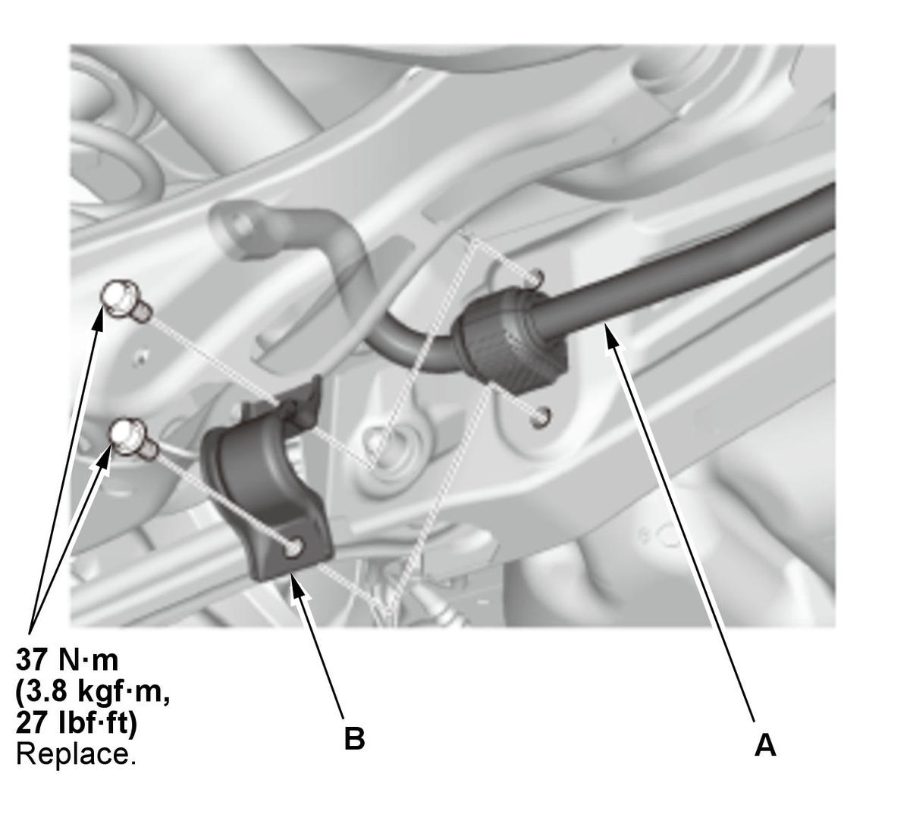

Rear Stabilizer Bar Removal and Installation: Installation
- Stabilizer Bar - Install

Courtesy of HONDA, U.S.A., INC.1. Install the stabilizer bar (A). 2. Install the bushing holders (B).
NOTE: Make sure there is no gap between the stabilizer bushing and the bushing holder.
- Stabilizer Link - Connect
1. Connect both sides of the stabilizer link to the stabilizer bar . - Rear Wheels - Install